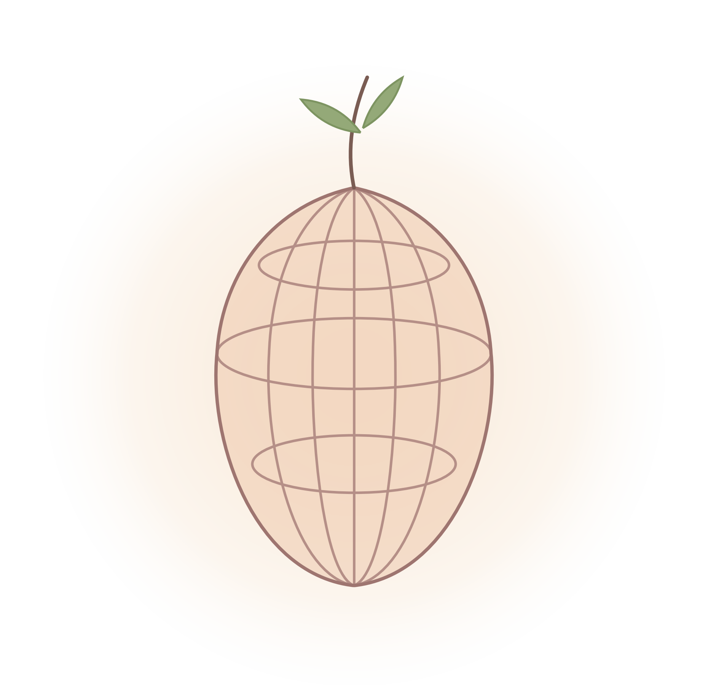

Тёплый, бережный разбор себя по дате рождения: характер, сильные стороны, предназначение, деньги, отношения и ритм года — в красивых картах Таро и золотом колесе неба.
Не сухие цифры, а понятный тёплый разбор — про тебя и для тебя.
Увидишь свой характер, таланты и мягкие зоны роста — как тёплое зеркало, а не приговор.
Куда расти и в чём твоя большая задача — в первой и во второй половине жизни.
Где твой денежный поток и как именно ты любишь, выбираешь и привязываешься.
Что подсвечивает каждый год до 2035-го и когда лучше начинать новое.
Древний символический и точный астрономический — вместе они дают объёмную картину.
Дату рождения. Для натальной карты — ещё время и город.
Карты, колесо и тёплые объяснения к каждому пункту.
Выгрузи PDF и перечитывай, когда захочется.
Один разбор или сразу оба — со скидкой.
Оплата пока в демо-режиме — подключим позже. Доступ к инструменту открывается по паролю.
Выбери пакет — и через минуту увидишь себя в тёплом свете звёзд.
Выбрать пакетЭто демонстрация — оплата пока не подключена. Скоро здесь будет настоящая касса, и пакет откроется автоматически.
Открыть инструмент